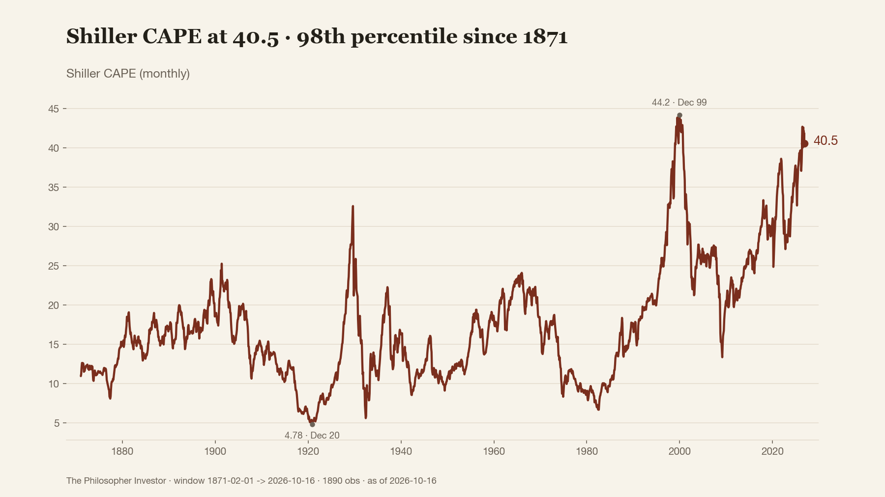
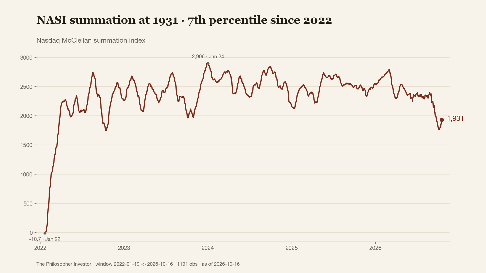
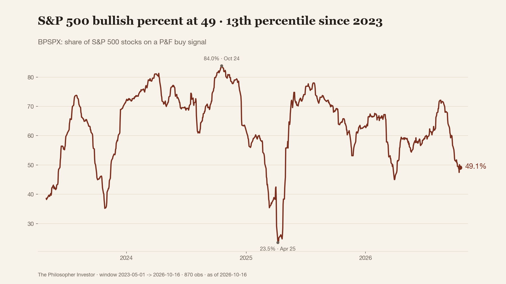
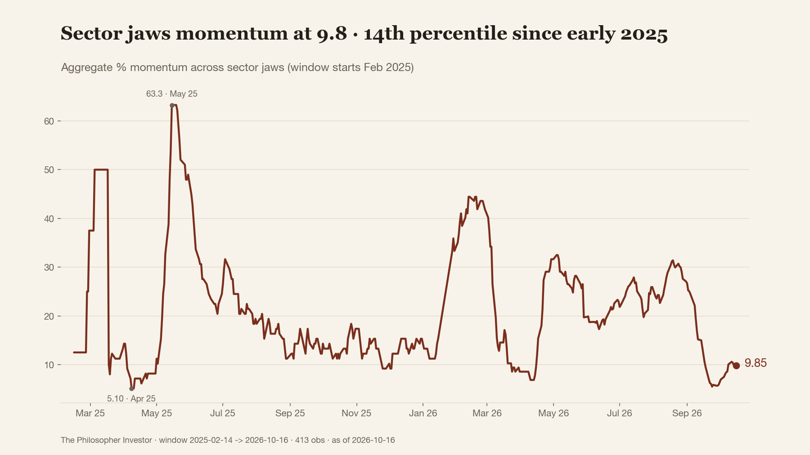
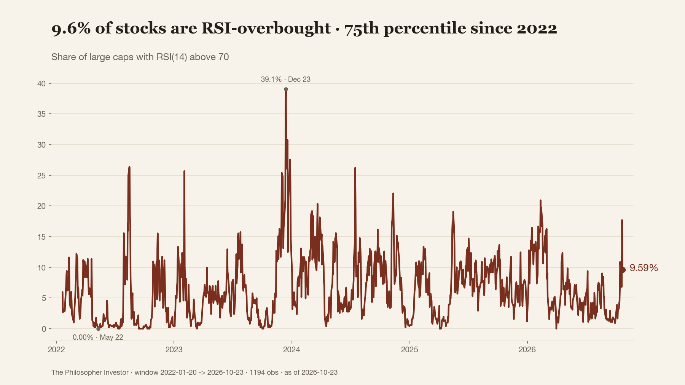
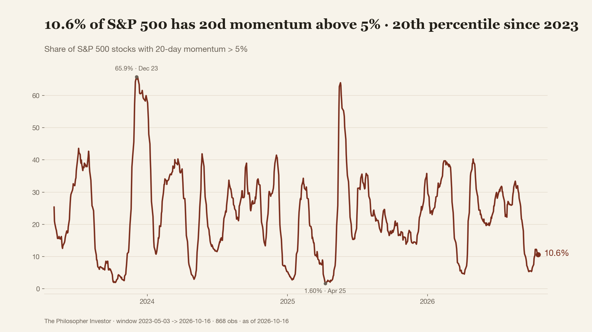
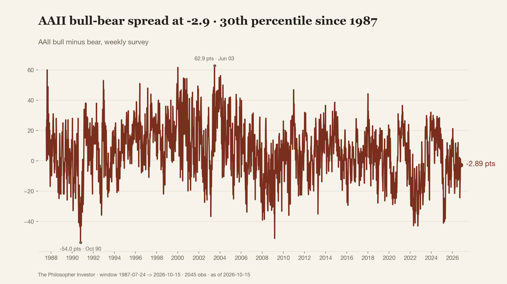
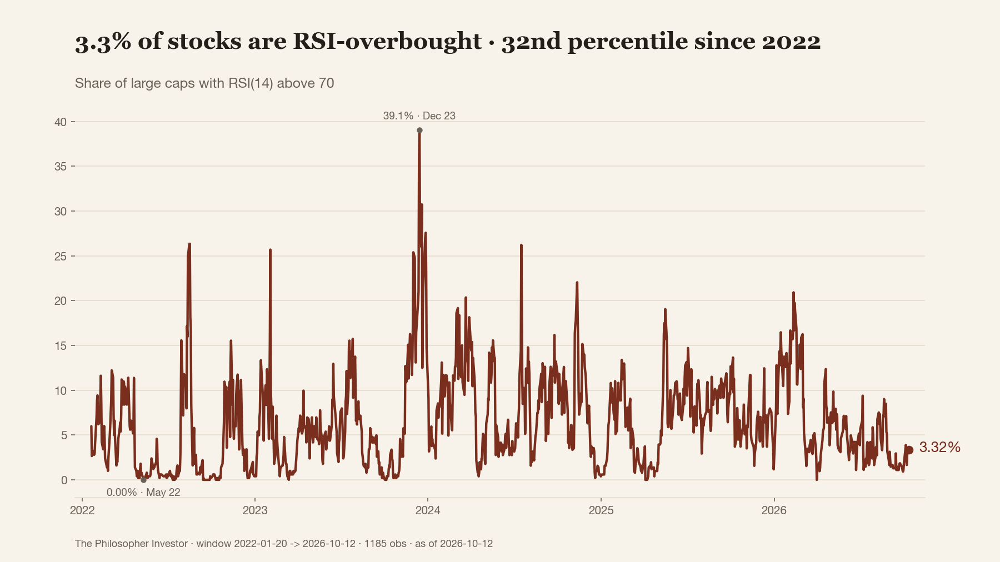

Charts of the Week
8 candidates · data through 2026-10-12
My pick: 1 + 2 + 3 + 4 + 5
1 · CAPE Shiller 41.9 · percentile 99 depuis 1871
2 · NASI 1822 · percentile 5 depuis 2022
3 · Corrélation intermarché · z +2.5 · la paire la plus étirée
4 · Bullish percent S&P 500 49 % · percentile 13 depuis 2023
5 · Jaws secteurs · momentum agrégé 10.6 · percentile 15 depuis début 2025
Dropped: 6 7 8
1 ★
1871-02-01 -> 2026-10-09 · 1,888 obs · source: Robert Shiller

2 ★
2022-01-19 -> 2026-10-12 · 1,187 obs · source: The Philosopher Investor

3 ★
2023-11-30 -> 2026-10-12 · 718 obs · source: The Philosopher Investor

4 ★
2023-05-01 -> 2026-10-12 · 866 obs · source: The Philosopher Investor

5 ★
2025-02-14 -> 2026-10-12 · 409 obs · source: The Philosopher Investor

6
2014-06-23 -> 2026-10-12 · 3,100 obs · source: The Philosopher Investor

7
2023-05-03 -> 2026-10-12 · 864 obs · source: The Philosopher Investor

8
2022-01-20 -> 2026-10-12 · 1,185 obs · source: The Philosopher Investor
